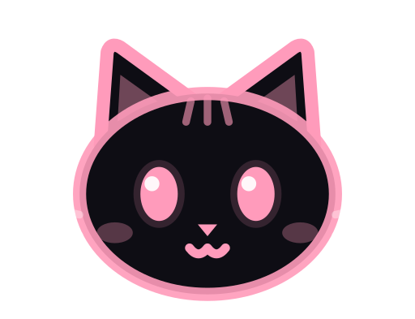
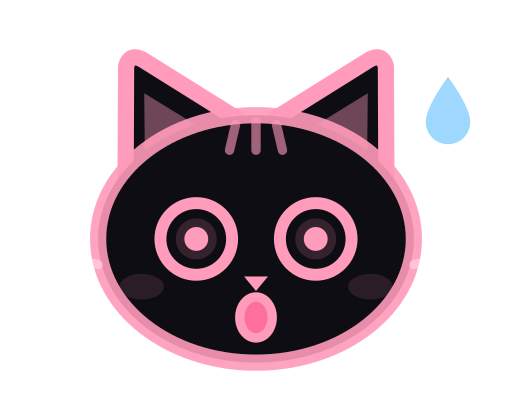
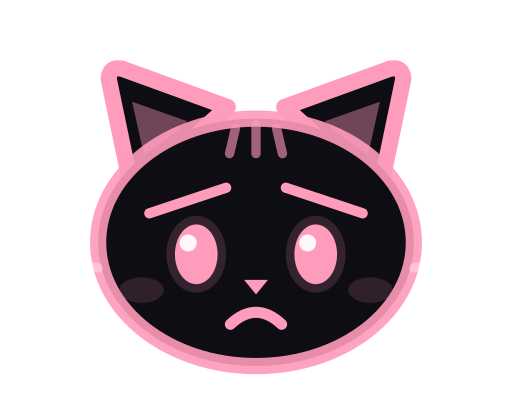
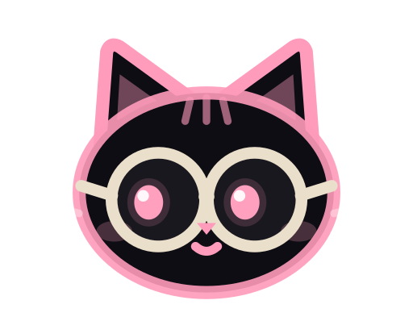

Pulau kecil di atas layar yang mengingatkan tugasmu hari ini.
Yomi Island menampilkan baterai, jam, dan seekor neko yang berubah ekspresi sesuai kegiatanmu. Klik untuk membuka task, timer baca, jadwal anime, dan kontrol musik.
Windows 10 dan 11. Gratis untuk pemakaian pribadi.
Hari ini
- Baca bab 1220.00
- Kembalikan buku ke perpustakaanbesok
- Catat target minggu initanpa jam
Timer baca
24:12
- Target halaman hari ini18 / 30
- Beruntun membaca6 hari
Jadwal tayang
- Kitsune no Yoru, ep. 82 hari 4 jam
- Hoshi no Pianist, ep. 35 jam
- Manga: Tsuki no Tegamibab 41 baru
Sedang diputar
Judul LaguNama Artis
Lirik berjalan ikut tampil di sini.
Istirahat mata
Tiap 20 menit, lihat sesuatu sejauh 6 meter selama 20 detik.
An Ode ToLo-fi malamLo-fi kafe
Coba klik pill di atas. Ini contoh, isinya bukan data asli.
Neko ikut membaca suasana
Pill kecil cukup dilirik sekilas. Dari ekspresi neko saja kamu sudah tahu keadaanmu.

Siaga
Task masih lama, atau kamu sedang rapat atau merekam. Titik kecil menandai mik aktif atau rekaman.

Semangat
Task kurang dari 15 menit lagi, sesi timer selesai, target halaman tercapai, atau ada episode dan bab baru.

Kaget
Task baru saja lewat batas waktu, sampai 10 menit.

Sedih
Task terlambat lebih dari 10 menit.

Membaca
Timer baca sedang berjalan. Sisa waktu tampil di pill.

Mendengar musik
Ada lagu yang diputar di Spotify, pemutar musik, atau browser.

Tidur
Tidak ada yang perlu dikerjakan, atau waktunya istirahat mata. Saat ada video atau game layar penuh, island menyembunyikan diri.
Lima tab, satu pulau
- Hari ini
- Daftar task dengan tanggal lengkap. Pill mengingatkan sebelum waktunya habis.
- Baca
- Timer fokus dan rehat, target halaman harian, daftar buku, dan hitungan hari beruntun membaca.
- Anime
- Hitung mundur episode berikutnya dari AniList, plus update bab manga dari MangaDex. Bahasa bab bisa diubah di Pengaturan.
- Musik
- Judul, putar, jeda, lompat lagu, volume Windows, dan lirik berjalan dari LRCLIB bila dinyalakan.
- Santai
- Istirahat mata 20-20-20, penanda saat layar direkam, kutipan harian, pengingat reset harian game, dan musik lo-fi sebagai suara latar.
Mode rapat menahan notifikasi saat mik aktif. Tema gelap atau terang mengikuti Windows atau pilihanmu, dan jendela Pengaturan punya pencarian.
Cara memasang
- Unduh installer. Ambil berkas
…-setup.exedari halaman rilis terbaru. - Jalankan. Windows mungkin menampilkan "Windows protected your PC" karena aplikasinya belum bertanda tangan digital. Pilih Informasi lebih lanjut, lalu Tetap jalankan. Pastikan berkas berasal dari halaman rilis di atas.
- Lihat ke tepi atas layar. Pill muncul di tengah. Klik untuk membuka panel, atau seret ke kiri dan kanan. Tur singkat tampil pada pertama kali dipakai.
Pembaruan: aplikasi memeriksa rilis baru di GitHub paling sering 12 jam sekali dan memberi tahu lewat pill. Bisa dimatikan di Pengaturan, bagian Umum.
Data tetap di laptopmu
Task, buku, dan pengaturan disimpan lokal. Tidak ada akun dan tidak ada telemetri. Aplikasi hanya menghubungi layanan berikut, dan hanya untuk fitur yang kamu pakai:
- AniList untuk jadwal anime
- MangaDex untuk bab manga
- LRCLIB untuk lirik, bila dinyalakan
- GitHub untuk cek versi baru, bila dinyalakan
Ada masalah? Lewat Pengaturan, bagian "Ada masalah?", kamu bisa membuka folder log dan mengirim laporan lewat formulir GitHub. Isi laporan kamu tinjau sendiri sebelum dikirim.